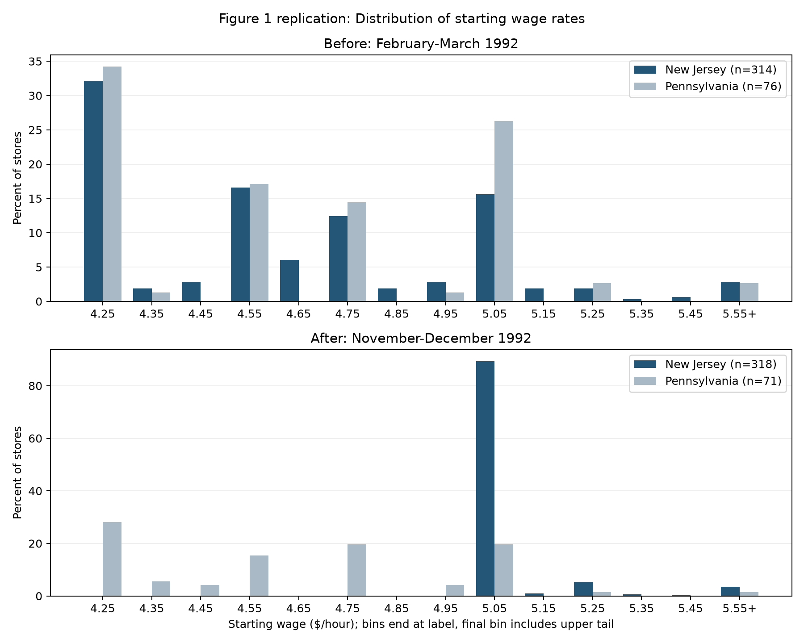
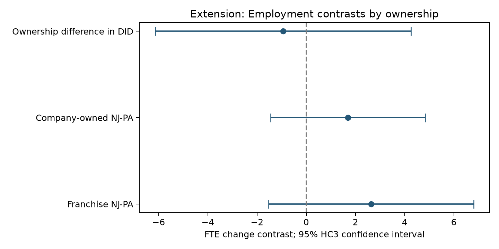

Zhao Ziming | Student ID: 3036537035
ECON6067 - Individual Project | Revised 16 October 2026
Did New Jersey's increase in the minimum wage from $4.25 to $5.05 on 1 April 1992 reduce fast-food employment? Card and Krueger (1994) compare New Jersey (NJ) restaurants with eastern Pennsylvania (PA), where the minimum remained $4.25. Competitive labor-demand reasoning predicts job losses when the floor binds; employer wage-setting power can permit a different response. This project reproduces Tables 2-4 and Figure 1, then asks whether company ownership moderates the state employment contrast.
The surveys cover February-March and November-December 1992. Define FTE = full-time employees + managers + 0.5 x part-time employees. The basic model is change in FTE = intercept + b x NJ + error. The wage-gap model replaces NJ with GAP: zero in PA, and max[(5.05 - initial wage)/initial wage, 0] in NJ. Chain and ownership controls follow the author program.
A causal interpretation requires parallel employment trends absent the policy, no relevant differential state shocks, and no spillovers contaminating the comparison. Two waves cannot establish pre-trends. The estimates are conditional comparisons, not proof that all minimum-wage increases raise employment.
The submitted public.csv contains 410 stores: 331 NJ and 79 PA. During this review it was independently compared, value by value and including missingness, with public.dat in the author-hosted njmin.zip. All 46 columns matched. The original acquisition route of the submitted CSV is not independently established. Re-run code/verify_public_source.py for verification; data/source_verification.json records hashes and the source URL.
Six permanent closures (STATUS2=3) have wave-2 employment zero. Four temporary closures (2, 4, 5) are missing in the baseline and zero only in the Table 3 row-5 sensitivity. One refusal remains missing. There are 12 missing pre-period FTE observations and 14 missing post-period observations; these overlap, leaving 384 paired records (309 NJ, 75 PA). Permanent closures are already included, not newly added as a robustness exercise.
Table 2 uses variable-specific available observations. Table 3 distinguishes all-available means from paired changes. Table 4 uses 357 records with valid employment changes and wages in both waves, except permanent closures are retained as in the author code. Use STATE plus SHEET as the store key: SHEET=407 occurs once in each state and must not be deduplicated across states.
| Section | Variable | NJ mean (SE) | PA mean (SE) | n NJ/PA | t |
|---|---|---|---|---|---|
| Store types | Burger King (%) | 41.09 (2.71) | 44.30 (5.62) | 331/79 | -0.52 |
| Store types | KFC (%) | 20.54 (2.22) | 15.19 (4.06) | 331/79 | 1.16 |
| Store types | Roy Rogers (%) | 24.77 (2.38) | 21.52 (4.65) | 331/79 | 0.62 |
| Store types | Wendy's (%) | 13.60 (1.89) | 18.99 (4.44) | 331/79 | -1.12 |
| Store types | Company-owned (%) | 34.14 (2.61) | 35.44 (5.42) | 331/79 | -0.22 |
| Wave 1 | FTE employment | 20.44 (0.51) | 23.33 (1.35) | 321/77 | -2.00 |
| Wave 1 | Full-time employees (%) | 32.85 (1.33) | 35.04 (2.73) | 321/77 | -0.72 |
| Wave 1 | Starting wage ($/hour) | 4.61 (0.02) | 4.63 (0.04) | 314/76 | -0.40 |
| Wave 1 | Wage = $4.25 (%) | 30.51 (2.53) | 32.91 (5.32) | 331/79 | -0.41 |
| Wave 1 | Full meal price ($) | 3.35 (0.04) | 3.04 (0.07) | 311/76 | 3.96 |
| Wave 1 | Hours open (weekday) | 14.42 (0.15) | 14.53 (0.33) | 331/79 | -0.29 |
| Wave 1 | Recruiting program (%) | 23.56 (2.34) | 29.11 (5.14) | 331/79 | -0.98 |
| Wave 2 | FTE employment | 21.03 (0.52) | 21.17 (0.94) | 319/77 | -0.13 |
| Wave 2 | Full-time employees (%) | 35.87 (1.38) | 30.38 (2.81) | 314/76 | 1.75 |
| Wave 2 | Starting wage ($/hour) | 5.08 (0.01) | 4.62 (0.04) | 318/71 | 10.82 |
| Wave 2 | Wage = $4.25 (%) | 0.00 (0.00) | 25.32 (4.92) | 331/79 | -5.14 |
| Wave 2 | Wage = $5.05 (%) | 85.50 (1.94) | 1.27 (1.27) | 331/79 | 36.38 |
| Wave 2 | Full meal price ($) | 3.41 (0.04) | 3.03 (0.07) | 305/71 | 5.08 |
| Wave 2 | Hours open (weekday) | 14.42 (0.15) | 14.65 (0.33) | 321/78 | -0.65 |
| Wave 2 | Recruiting program (%) | 20.32 (2.27) | 23.38 (4.85) | 315/77 | -0.57 |
SEs are standard errors of store means. t uses the independent-state difference divided by the square root of the two mean variances. Full-time percentage follows the author program: 100 x EMPFT/FTE (managers are included in the FTE denominator). Full meal price sums soda, fries and entree; missing components make meal price missing. Wave-2 recruiting program uses SPECIAL2, as in the author code.
Exact-wage indicator percentages use all stores in each state, coding missing wages as false to reproduce the author SAS comparison convention; this differs from the nonmissing-wage denominator used in Figure 1. Published and computed means are compared in table2_comparison.csv. Most differences are rounding. NJ post-period wage=$5.05 is 85.50% here versus 85.2% printed, a one-store discrepancy not resolved by this public release; it is retained and disclosed rather than adjusted to force agreement. Some printed t statistics also differ slightly.
The first stage is clear: starting wage increases from $4.61 to $5.08 in NJ, while PA changes from $4.63 to $4.62. A policy-induced wage shift alone does not identify its employment effect.
| Row | PA | NJ | NJ-PA |
|---|---|---|---|
| 1. Before, available | 23.33 (1.35) | 20.44 (0.51) | -2.89 (1.44) |
| 2. After, available | 21.17 (0.94) | 21.03 (0.52) | -0.14 (1.08) |
| 3. Change in available means | -2.17 | 0.59 | 2.75 |
| 4. Paired change | -2.28 (1.25) | 0.47 (0.48) | 2.75 (1.34) |
| 5. Temporary closures = 0 | -2.28 (1.25) | 0.23 (0.49) | 2.51 (1.35) |
| Row | NJ $4.25 | NJ $4.26-$4.99 | NJ >= $5 |
|---|---|---|---|
| 1. Before, available | 19.56 (0.77) | 20.08 (0.84) | 22.25 (1.14) |
| 2. After, available | 20.88 (1.01) | 20.96 (0.76) | 20.21 (1.03) |
| 3. Change in available means | 1.32 | 0.87 | -2.04 |
| 4. Paired change | 1.20 (0.82) | 0.71 (0.69) | -2.16 (1.01) |
| 5. Temporary closures = 0 | 0.90 (0.87) | 0.49 (0.69) | -2.39 (1.02) |
| Row | NJ low-high | NJ middle-high |
|---|---|---|
| 1. Before, available | -2.69 (1.37) | -2.17 (1.41) |
| 2. After, available | 0.66 (1.44) | 0.74 (1.27) |
| 3. Change in available means | 3.36 | 2.91 |
| 4. Paired change | 3.36 (1.30) | 2.87 (1.22) |
| 5. Temporary closures = 0 | 3.29 (1.34) | 2.88 (1.23) |
Parentheses: SEs for levels, paired changes and independent-group contrasts. Row 3 uses different available samples in each wave; its point estimate is reproduced, but its covariance-adjusted SE is not reconstructed here. It is intentionally left blank rather than mislabeled as the paired-change SE. Row 4 estimates the mean within-store change; row 5 additionally sets the four temporarily closed stores to zero. Baseline permanent closures remain zero throughout.
All 40 point estimates agree with the printed Table 3 to within 0.008 FTE (rounding). The all-available DID is +2.76, the paired DID is +2.75, and the temporary-closure sensitivity is +2.51. These are different estimands/samples and should not be described as one identical calculation. Full differences and sample sizes are in the CSV outputs.
| Model | Term | Estimate | OLS SE | HC3 SE | Paper (SE) | n |
|---|---|---|---|---|---|---|
| i | STATE | 2.33 | 1.19 | 1.47 | 2.33 (1.19) | 357 |
| ii | STATE | 2.30 | 1.20 | 1.47 | 2.30 (1.20) | 357 |
| iii | gap | 15.65 | 6.08 | 6.20 | 15.65 (6.08) | 357 |
| iv | gap | 14.92 | 6.21 | 6.58 | 14.92 (6.21) | 357 |
| v | gap | 11.91 | 7.39 | 7.11 | 11.91 (7.39) | 357 |
| Model | Chain / ownership controls | Region controls | Residual SE | Joint controls F p |
|---|---|---|---|---|
| i | No | No | 8.79 | - |
| ii | Yes | No | 8.78 | 0.344 |
| iii | No | No | 8.76 | - |
| iv | Yes | No | 8.76 | 0.437 |
| v | Chain only | Yes | 8.74 | 0.307 |
All five regressions use the same 357 observations. Conventional homoskedastic OLS SEs reproduce the published table; HC3 SEs are additional sensitivity estimates. The NJ coefficient is +2.326 (SE 1.192) without controls and +2.304 (SE 1.196) with chain and ownership controls. These are not the +2.75 estimate from the 384-store paired sample.
Models iii-v use the proportional initial wage gap. All five primary coefficients and conventional SEs match the printed values after rounding. Model v contains GAP and four region indicators; it does not contain NJ, so PA1 and PA2 can both be included without collinearity. The prior NJ-plus-region specification was not the assigned Table 4 model.
Author-code discrepancy: printed Table 4 labels model v as including ownership, but the distributed check.sas omits CO_OWNED in that model. Following the executable author specification reproduces GAP = 11.91 (SE 7.39). Including ownership instead gives 11.98 (SE 7.42); this alternative is saved separately. The choice is documented rather than silently selecting a specification to match the target. Model v residual-SE and joint-control F diagnostics differ slightly from the printed table; the reproduced code-based values are shown.
Inference limitation: HC3 permits heteroskedasticity across stores but does not correct arbitrary state-level correlation. Policy varies across only two states; conventional state-cluster inference is unreliable with two clusters. Treat store-level significance as descriptive sensitivity, not conclusive policy-level evidence. Wider intervals and weak regional precision preclude a strong positive-effect claim.

This reproduces the subject and two-wave/state structure of the actual Figure 1: starting-wage distributions, not mean employment. Each state-wave denominator is the number of stores with an observed starting wage. Bars are proportions, so each distribution sums to 100%. Bin labels are upper bounds 4.25, 4.35, ..., 5.55; the final bin absorbs the upper tail. The plotted November panel includes the full November-December survey wave.
This is a transparent modern redrawing, not a pixel-identical copy. Exact original histogram cutpoints and tail handling are not documented in the public program. Our bins and counts are exported in figure1_wage_bins.csv. The concentration at the new NJ wage floor is clear; PA retains a dispersed distribution near the old floor. The mean-employment visualization is supplementary and cannot substitute for this assigned figure.
Question: does the NJ-PA employment contrast differ between company-owned and franchise restaurants, conditional on chain? Ownership may proxy centralized wage/staffing decisions, financing and local adjustment incentives. Neither sign is imposed in advance. A wage-bite split alone is not an independent contribution: original Tables 3-4 already compare initial wages and wage gaps.
Estimate change in FTE = intercept + b x NJ + c x Company + d x NJ x Company + chain indicators + error, on the same 357-store replication sample. The parameter d is the difference between the company-owned and franchise state contrasts. Ownership is measured before treatment. Report HC3 SEs, t-based 95% intervals, and the wider 384-store employment-only sample as sensitivity; missing wages need not exclude stores for this ownership question.
| Contrast | Estimate | HC3 SE | 95% CI | p |
|---|---|---|---|---|
| Franchise NJ-PA | 2.64 | 2.12 | [-1.53, 6.81] | 0.213 |
| Company-owned NJ-PA | 1.70 | 1.60 | [-1.44, 4.84] | 0.288 |
| Ownership difference in DID | -0.94 | 2.64 | [-6.14, 4.25] | 0.721 |

The ownership interaction is -0.94 FTE (p=0.721); its interval spans -6.14 to 4.25. In the 384-store sample it is -1.14 (p=0.637). These results do not establish an ownership difference; substantial negative and positive differences remain compatible with the data. This is a conditional heterogeneity association, not a causal effect of company ownership. Sparse cells, nonrandom ownership, two-state policy variation and multiple possible subgroup choices limit interpretation.
Validation completed during review: independent comparison of every raw value with the author archive; state counts and composite-key uniqueness; closure-status counts and missingness audit; assertions for 384 paired and 357 regression observations; full-rank regression designs; rounded agreement of all five Table 4 coefficients/OLS SEs; Table 3 paired and temporary-closure DID benchmarks; and distribution percentages summing to 100. No claim of hand calculation or student-only verification is made.
Reproduce with Python and requirements.txt, then run python code/run_all.py from any working directory. The workflow reads the locally supplied public CSV and regenerates processed data, tables, figures, this PDF and the matching HTML. PDF creation uses ReportLab and needs no browser or proprietary software. The optional source verifier downloads only the author public archive; the main workflow needs no network access. README and skills/SKILL.md describe the same workflow.
Remaining replication limits: Table 3 row-3 SEs are not reconstructed; the public-data exact-$5.05 share differs by one NJ store from the printed Table 2; Figure 1 uses documented modern bins; model v follows the author code and discloses the ownership-label discrepancy. Small rounding and printed-summary differences remain visible in comparison files. No data or coefficient was edited to force a match.
Conclusion: the sample shows a positive NJ-relative employment change (+2.76 in all-available means; +2.75 in paired changes). The assigned regression sample yields smaller NJ contrasts around +2.3 FTE. This supports the paper's finding of no observed relative employment reduction in this setting, with substantial uncertainty about causal attribution and generalization. The ownership extension finds no precise evidence that company and franchise stores differ in their relative response.
AI assisted this review, coding, source comparison, extension design and report writing. Outputs were programmatically recomputed and compared with primary sources. The review corrected the wrong Figure 1, incomplete tables, incorrect closure interpretation, regression-sample/specification errors, and overstatements of significance and manual verification. See AI_USE_DISCLOSURE.md for a record. The student should read the final code, results and limitations and must not claim checks or data-acquisition steps they did not personally perform.
Card, D. and Krueger, A. B. (1994). Minimum Wages and Employment: A Case Study of the Fast-Food Industry in New Jersey and Pennsylvania. American Economic Review 84(4), 772-793. Tables 2-4: pp.776, 780; Figure 1: p.777.
Paper: https://davidcard.berkeley.edu/papers/njmin-aer.pdf
Author data landing page: https://davidcard.berkeley.edu/data_sets.html
Public archive: https://davidcard.berkeley.edu/data_sets/njmin.zip
Archive includes public.dat, codebook, check.sas and survey forms. Princeton catalogue: https://irs.princeton.edu/publications/data-sets/minimum-wages-and-employment-chapter-4